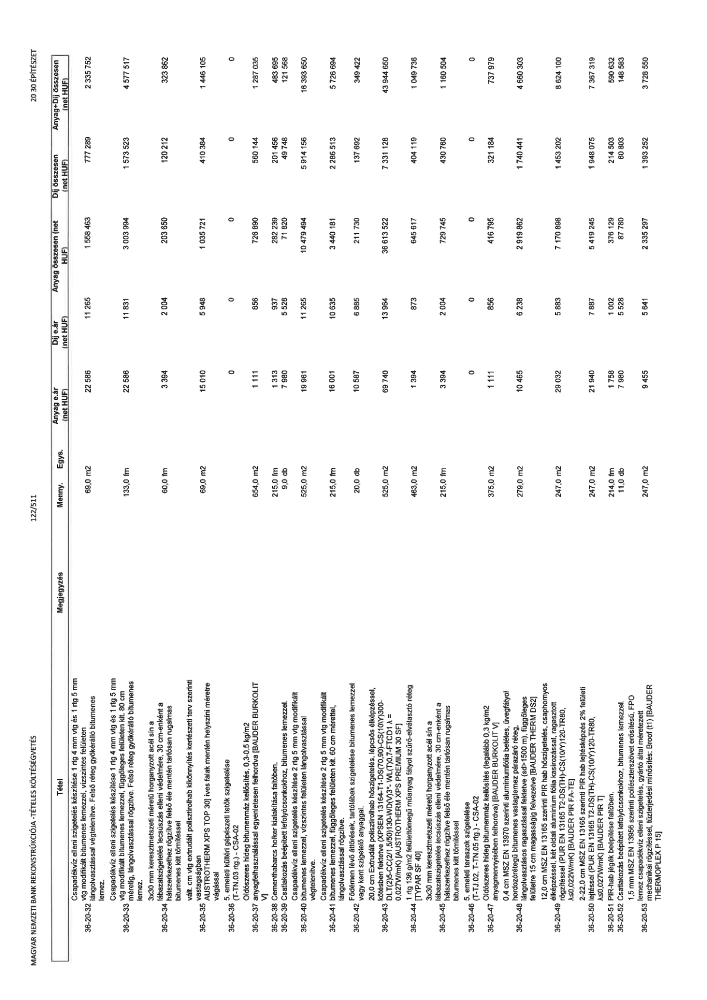

| Tétel | Megjegyzés | Menny. | Egys. | Anyag e.ár (net HUF) | Díj e.ár (net HUF) | Anyag összesen (net HUF) | Díj összesen (net HUF) | Anyag+Díj összesen (net HUF) |
|---|---|---|---|---|---|---|---|---|
| 36-20-32 | Csapadékvíz elleni szigetelés készítése 1 rtg 4 mm vtg és 1 rtg 5 mm vtg modifikált bitumenes lemezzel, vízszintes felületen lángolvasztással végtelenítve. Felso réteg gyökérálló bitumenes lemez. | NaN | 69,0 m2 | 22 586 | 11 265 | 1 558 463 | 777 289 | 2 335 752 |
| 36-20-33 | Csapadékvíz elleni szigetelés készítése 1 rtg 4 mm vtg és 1 rtg 5 mm vtg modifikált bitumenes lemezzel, függoleges felületen kit. 80 cm mérettol, lángolvasztással rögzítve. Felso réteg gyökérálló bitumenes lemez. | NaN | 133,0 fm | 22 586 | 11 831 | 3 003 994 | 1 573 523 | 4 577 517 |
| 36-20-34 | 3x30 mm keresztmetszeti méretu horganyzott acél sín a lábazatszigetelés lecsúszás elleni védelmére, 30 cm-enként a hátszerkezethet rögzítve felso éle mentén tartósan rugalmas bitumenes kitt tömítéssel | NaN | 60,0 fm | 3 394 | 2 004 | 203 650 | 120 212 | 323 862 |
| 36-20-35 | vált. cm vtg extrudált polisztirolhab kikönnyítés kertészeti terv szerinti vastagságban [AUSTROTHERM XPS TOP 30] íves falak mentén helyszíni méretre vágással | NaN | 69,0 m2 | 15 010 | 5 948 | 1 035 721 | 410 384 | 1 446 105 |
| 36-20-36 | 5. emeleti kültéri gépészeti tetok szigetelése (T-TN.03 rtg.) - CSA-02 | NaN | NaN | 0 | 0 | 0 | 0 | 0 |
| 36-20-37 | Oldószeres hideg bitumenmáz kellosítés, 0,3-0,5 kg/m2 anyagfelhasználással egyenletesen felhordva [BAUDER BURKOLIT V] | NaN | 654,0 m2 | 1 111 | 856 | 726 890 | 560 144 | 1 287 035 |
| 36-20-38 | Cementhabarcs holker kialakítása falfoben. | NaN | 215,0 fm | 1 313 | 937 | 282 239 | 201 456 | 483 695 |
| 36-20-39 | Csatlakozás beépített lefolyócsonkokhoz, bitumenes lemezzel. | NaN | 9,0 db | 7 980 | 5 528 | 71 820 | 49 748 | 121 568 |
| 36-20-40 | Csapadékvíz elleni szigetelés készítése 2 rtg 5 mm vtg modifikált bitumenes lemezzel, vízszintes felületen lángolvasztással végtelenítve. | NaN | 525,0 m2 | 19 961 | 11 265 | 10 479 494 | 5 914 156 | 16 393 650 |
| 36-20-41 | Csapadékvíz elleni szigetelés készítése 2 rtg 5 mm vtg modifikált bitumenes lemezzel, függoleges felületen kit. 60 cm mérettel, lángolvasztással rögzítve. | NaN | 215,0 fm | 16 001 | 10 635 | 3 440 181 | 2 286 513 | 5 726 694 |
| 36-20-42 | Födémen lévo áttörések, tartólábak szigetelése bitumenes lemezzel vagy kent szigetelo anyaggal. | NaN | 20,0 db | 10 587 | 6 885 | 211 730 | 137 692 | 349 422 |
| 36-20-43 | 20,0 cm Extrudált polisztirolhab hoszigetelés, lépcsos élképzéssel, kötésben fektetve (XPS EN 13164-T1-DS(70,90)-CS(10/Y)300-DLT(2)5-CC(2/1,5/50)130-WD(V)3*-WL(T)0,7-FTCD1 ? = 0,027W/mK) [AUSTROTHERM XPS PREMIUM 30 SF] | NaN | 525,0 m2 | 69 740 | 13 964 | 36 613 522 | 7 331 128 | 43 944 650 |
| 36-20-44 | 1 rtg 136 g/m2 felülettömegu muanyag fátyol szuro-elválasztó réteg [TYPAR SF 40] | NaN | 463,0 m2 | 1 394 | 873 | 645 617 | 404 119 | 1 049 736 |
| 36-20-45 | 3x30 mm keresztmetszeti méretu horganyzott acél sín a lábazatszigetelés lecsúszás elleni védelmére, 30 cm-enként a hátszerkezethet rögzítve felso éle mentén tartósan rugalmas bitumenes kitt tömítéssel | NaN | 215,0 fm | 3 394 | 2 004 | 729 745 | 430 760 | 1 160 504 |
| 36-20-46 | 5. emeleti teraszok szigetelése (T-TJ.02, T-TN.05 rtg.) - CSA-02 | NaN | NaN | 0 | 0 | 0 | 0 | 0 |
| 36-20-47 | Oldószeres hideg bitumenmáz kellosítés (legalább 0,3 kg/m2 anyagmennyiségben felhordva) [BAUDER BURKOLIT V] | NaN | 375,0 m2 | 1 111 | 856 | 416 795 | 321 184 | 737 979 |
| 36-20-48 | 0,4 mm MSZ EN 13970 szerinti alumíniumfólia betétes, üvegfátyol hordozórétegu bitumenes vastaglemez párazáró réteg, lángolvasztásos ragasztással fektetve (sd>1500 m), függoleges felületre 15 cm magasságig felvezetve [BAUDER THERM DS2] | NaN | 279,0 m2 | 10 465 | 6 238 | 2 919 862 | 1 740 441 | 4 660 303 |
| 36-20-49 | 12,0 cm MSZ EN 13165 szerinti PIR hab hoszigetelés, csaphornyos élképzéssel, két oldali alumínium fólia kasírozással, ragasztott rögzítéssel (PUR EN 13165 T2-DS(TH)-CS(10/Y)120-TR80, ?=0,022W/mK) [BAUDER PIR FA-TE] | NaN | 247,0 m2 | 29 032 | 5 883 | 7 170 898 | 1 453 202 | 8 624 100 |
| 36-20-50 | 2-22,0 cm MSZ EN 13165 szerinti PIR hab lejtésképzés 2% felületi lejtéssel (PUR EN 13165 T2-DS(TH)-CS(10/Y)120-TR80, ?=0,027W/mK) [BAUDER PIR T] | NaN | 247,0 m2 | 21 940 | 7 887 | 5 419 245 | 1 948 075 | 7 367 319 |
| 36-20-51 | PIR-hab lejték beépítése faltoben. | NaN | 214,0 fm | 1 758 | 1 002 | 376 129 | 214 503 | 590 632 |
| 36-20-52 | Csatlakozás beépített lefolyócsonkokhoz, bitumenes lemezzel. | NaN | 11,0 db | 7 980 | 5 528 | 87 780 | 60 803 | 148 583 |
| 36-20-53 | 1,5 mm MSZ EN 13956 szerinti poliészterszövet erosítésu, FPO lemez csapadékvíz elleni szigetelés, gyártó által méretezett mechanikai rögzítéssel, tuzterjedési minosítés: Broof (t1) [BAUDER THERMOPLEX P 15] | NaN | 247,0 m2 | 9 455 | 5 641 | 2 335 297 | 1 393 252 | 3 728 550 |
